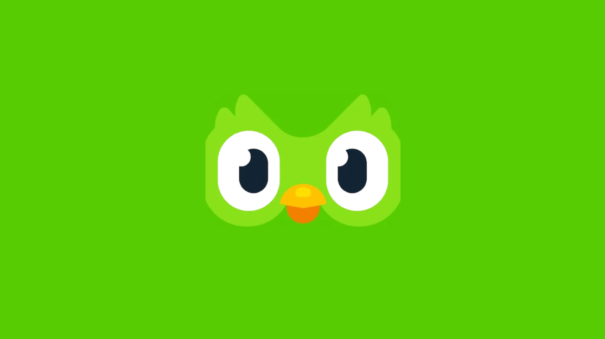
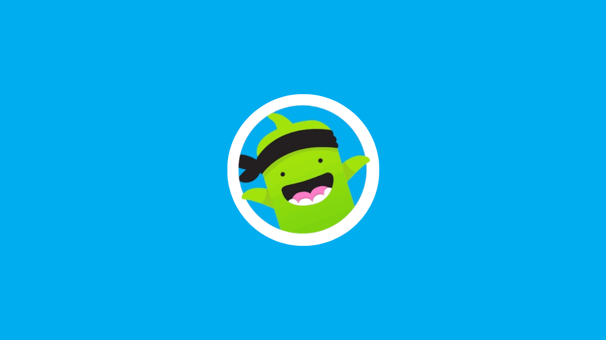
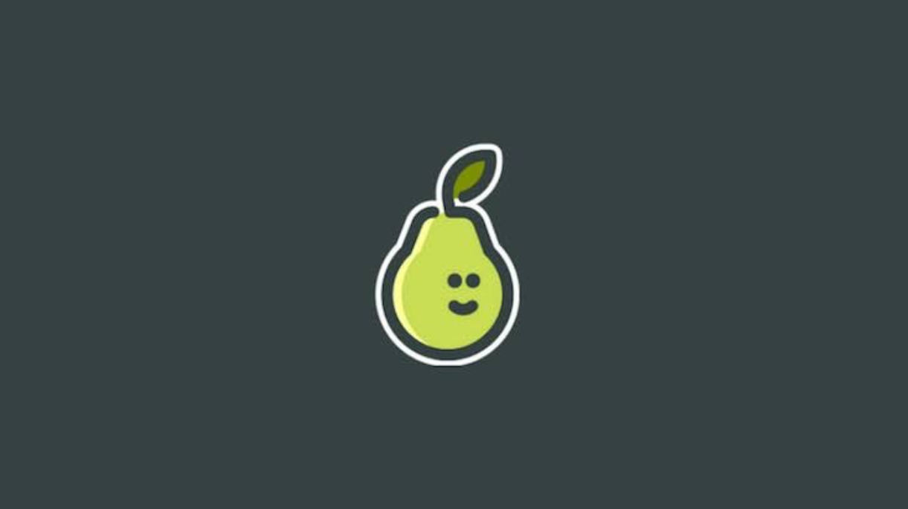

tecnología y los adolescentes
Identificar formas de utilizar la tecnología a su favor del estudiante,
con el fin de fomentar su interés aprovechamiento escolar y disminuir su retraso académico.
TABLERO DIGITAL

Duolingo
Descripcion general:
Duolingo es la plataforma de aprendizaje de idiomas más popular del mundo, diseñada para hacer el estudio accesible, gratuito y divertido. Mediante un enfoque de gamificación, transforma las lecciones en breves juegos diarios donde los usuarios ganan puntos, mantienen rachas y compiten en ligas.

ClassDojo
Descripcion general:
ClassDojo es una plataforma digital educativa diseñada para mejorar la comunicación entre docentes, estudiantes y familias. Su objetivo principal es crear una comunidad escolar unida y fomentar un ambiente de aula positivo. Los profesores la utilizan para registrar el comportamiento de los alumnos, asignando puntos por actitudes.
Discord
Descripcion general:
Discord es una plataforma de comunicación gratuita diseñada originalmente para videojugadores, pero que hoy en día conecta a todo tipo de comunidades. Funciona a través de servidores privados o públicos organizados en canales de texto, voz y video, facilitando la interacción organizada por temas.

Pear deck
Descripcion general:
Pear Deck es una plataforma educativa interactiva diseñada para transformar presentaciones estáticas en experiencias de aprendizaje activo. Integrada completamente con Google Slides y Microsoft PowerPoint, permite a los docentes añadir preguntas multimedia.
Scratch
Descripcion general:
Scratch es un entorno de programación visual gratuito desarrollado por el MIT, diseñado para que personas de todas las edades, especialmente niños, aprendan a programar de forma intuitiva. En lugar de escribir código complejo, los usuarios arrastran y conectan.
YouTube
Descripcion general:
YouTube es la plataforma global líder para compartir y descubrir videos en internet. Fundada en 2005 y propiedad de Google. permite a millones de usuarios crear, subir, ver y comentar contenido audiovisual de forma gratuita. Su catálogo abarca desde tutoriales educativos, Ets...
FORMULARIO
JUEGO INTERACTIVO
actividad estructurada en la que los participantes toman decisiones y realizan acciones que influyen
directamente en el desarrollo y el resultado de la experiencia